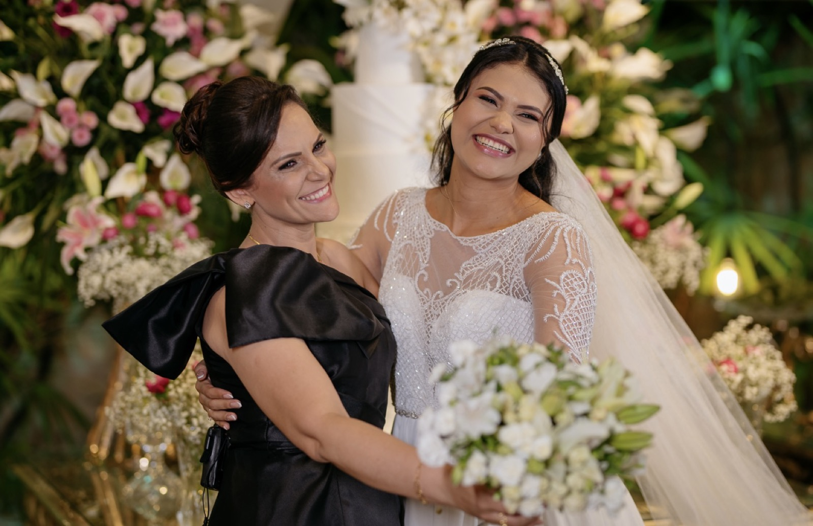
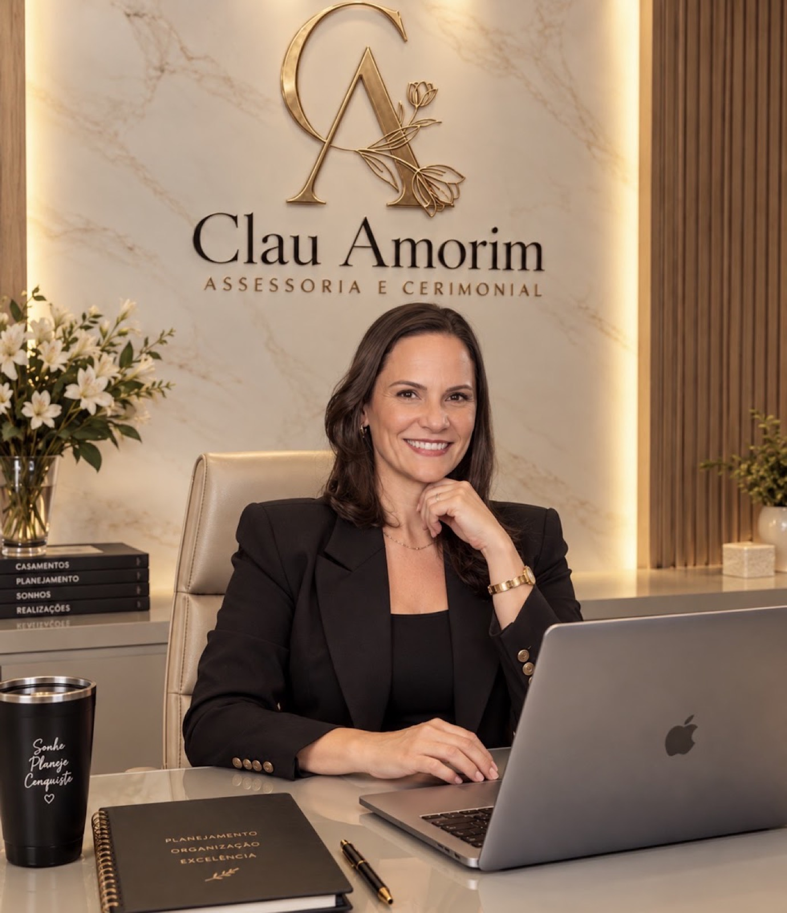
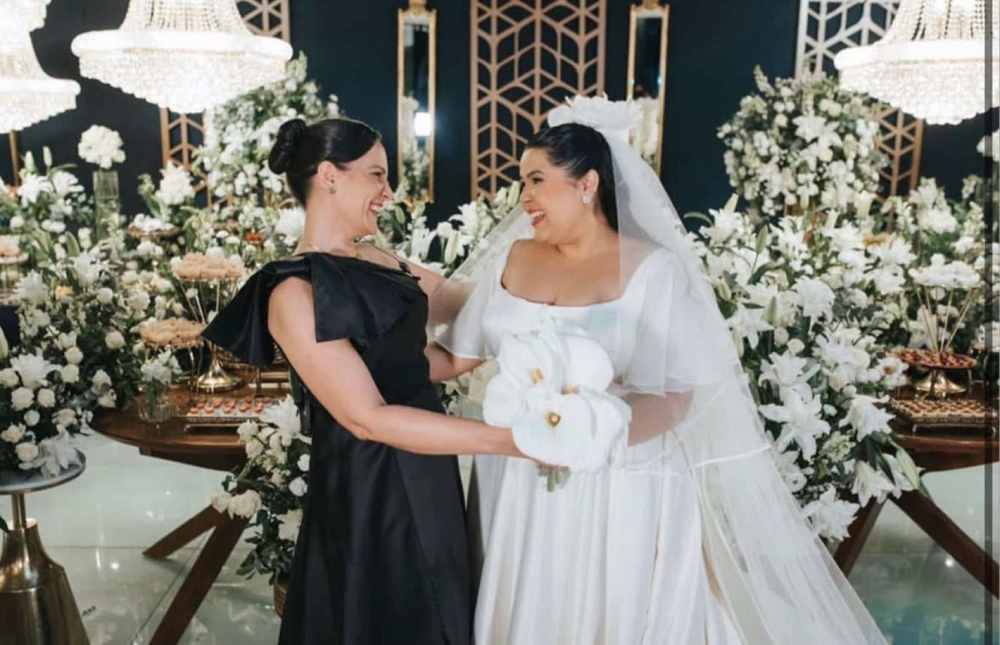
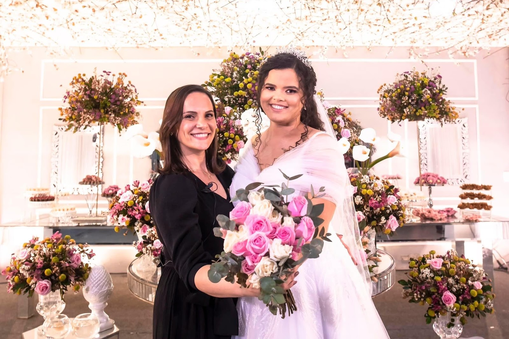
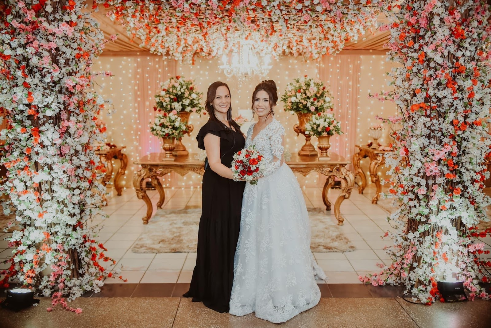
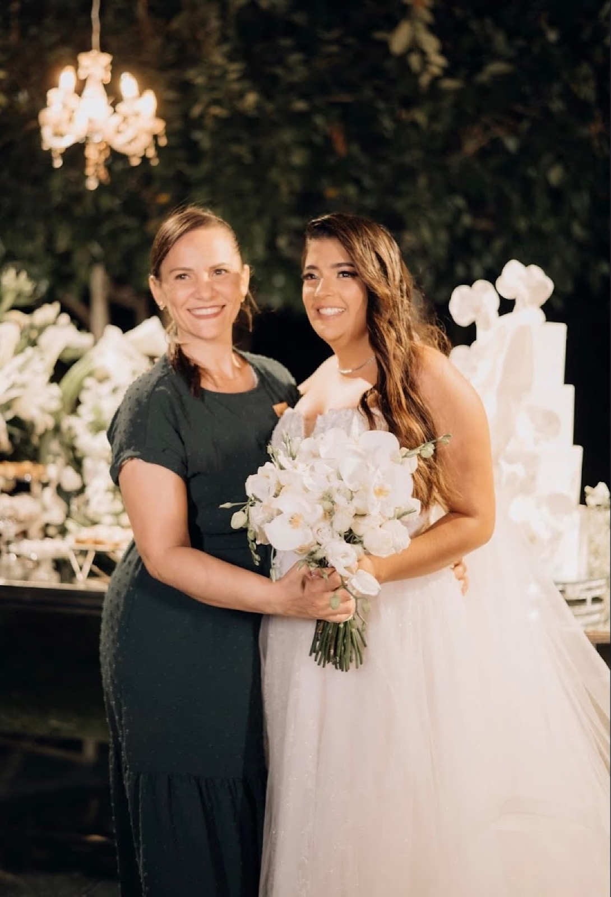
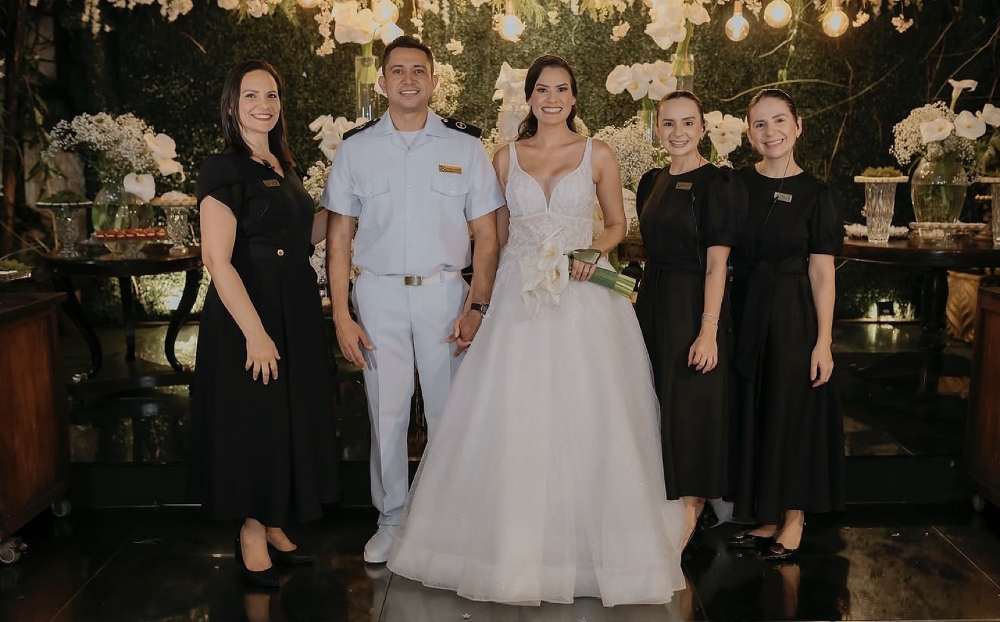

Noivado, casamento, 15 anos ou aniversário: a Clau cuida da organização em cada detalhe para que você aproveite o seu evento ao lado da família e dos amigos.

“Obrigada por transmitir paz, tranquilidade e por ser o apoio tão importante na organização do nosso casamento, foi tudo perfeito.”Josy, sobre o casamento com Vitor

Quem contrata a Clau Amorim Cerimonial ganha alguém de confiança para dividir as decisões. As clientes contam que ela orienta desde a escolha do vestido até os fornecedores, e que responde com prontidão, inclusive fora do horário comercial.
No dia do evento, a Clau e a equipe cuidam do desenrolar de cada momento, para que você só precise viver a festa.
Há clientes que fizeram o noivado, o casamento e vários aniversários com a Clau. Cada celebração recebe o mesmo cuidado.
Assessoria nos preparativos e cerimonial no grande dia.
O primeiro passo da história, organizado com leveza.
Uma noite especial para a debutante e para toda a família.
Festas de família conduzidas sem correria para quem recebe.
“Desde o início, ela demonstra atenção, profissionalismo, disponibilidade e muito cuidado com cada detalhe. Sempre que precisamos esclarecer alguma dúvida, somos atendidos com prontidão, carinho e dedicação, inclusive em horários fora do convencional.”
Mirella“Nos auxilia em todos os momentos, na escolha do vestido, dos melhores fornecedores e quais evitar, e até das coisas mais pequenas! Com certeza nossa melhor escolha!”
Larissa“Foi essencial para tornar os 15 anos da minha filha um momento tão lindo e inesquecível! Obrigada por todo carinho, dedicação, profissionalismo e cuidado com cada detalhe.”
Janaina“Eles se preocupam com todo o desenrolar do evento nos mínimos detalhes, tudo feito com muito carinho e cuidado para que possamos aproveitar o máximo do nosso evento… Trabalho impecável!!”
Alessandra“Ela entrega mais do que o que promete. Realmente se compromete a realizar sonhos! Fiz meu noivado, casamento e alguns aniversários com ela!”
Jerusa“Sempre solícita, nos deixa muito à vontade, além de ser muito responsável! Nos auxilia muito em cada fechamento de contrato.”
Daniela“Maravilhosa, sempre disponível para ajudar, comunicação clara e gentil e super proativa! Recomendo de olhos fechados!!”
Jad“Pessoa muito acolhedora… Estamos amando viver nosso sonho com ela.”
HeloisaAvaliações públicas no Google.





Responda rapidinho e receba um cronograma sugerido. No final, suas respostas vão organizadas direto para o WhatsApp da Clau.
Conte a data e o tipo de celebração. A Clau responde e marca uma conversa para entender o que você imagina.